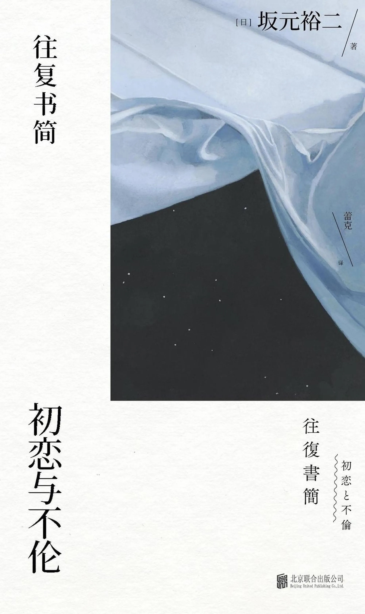

前言
我要说的，主要是这个世界的痛楚，和与痛楚数量相当的喜悦。——坂元裕二
所有的河都连在一起，你流进我，我流进你。世界上发生的事情，同样也会发生在你我身边，你我身上。这个世界充满了痛楚，但幸好，也充满了与痛楚数量相同的喜悦。
正文
很有坂元裕二的风格，故事非常的轻巧灵活而婉转动人，有和他写的日剧里那种淡淡忧郁感。
两个故事描写，我脑海中最恰当的词就是"纯粹": "纯粹"的心、"纯粹"的情感、"纯粹"的爱。然而这种"纯粹"的情感则让我感受到了"失真"感，太不真实了。抛弃书信体，看故事本身，这样"纯粹"的东西让故事似乎显得有些苍白，尤其是在"初恋"篇，阅读过程中倒没有感觉，回味的时候就感觉过于"梦幻"了。而这样的"纯粹"，反而在"不伦"篇中表现出的既扭曲又真诚的爱会更有实感。
诚然，在阅读故事中，确实有感受到潮水般的触动，让我想由衷的感慨，但是也许是故事过于"梦幻"，这些触动也如潮水一般，上岸后就渐渐消失了...
不管怎么说，阅读的过程中是蛮舒服的，我还蛮喜欢这种举重若轻的感觉，感觉情感悠悠地在天上飘，还是推荐看的
2023/9/4
Yuay
@Yuay